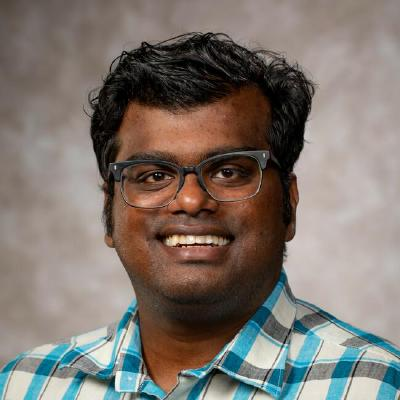

I am a Ph.D. Candidate in the Department of Mathematical Sciences at the University of Arkansas under the supervision of Dr. Josh Padgett
Starting January 2023 I will be TA'ing in the Data Science Department at the University of Arkansas, under Drs. Karl Schubert and Kelly Sullivan.
I have also been offered an summer internship position at Arkansas Blue Cross and Blue Shield, under Dr. Aaron Nototny working on time-series data for predicting health outcomes.
My project there involved taking users' diabetes and maternity and creating a Markov model for the process. Having finished the project I also embarked on a long term project of using convergent cross mapping techniques (pioneered by Sugihara & May) to predict the cyclical nature of disease. This was incomplete by the time I finished my internship.
I was also lucky enough to be invited to participate at the Simons Laufer Mathematical Sciences Institute, SLMath, formerly MSRI, Summer Graduate School in Machine Learning held this year at the University of California, San Diego.
My interests are in researching Numerical Methods to stiff ODEs, particularly the use of artificial neural network methods in solving PDEs, and Brownian motion methods for approximating PDEs particularly via the use of Feynman-Kac. Check out my GitHub here.
I also did my MSc. in Pure Mathematics here at the University of Arkansas. Whereas my BSc. was in Mathematics and Philosophy at Troy University in Troy, Alabama.
Check out my LinkedIn and my (as of December 2023) resume here and CV here.
You can email me here: sarafi@uark.edu
Regular snail mail can reach me at:
Department of Mathematical Sciences
SCEN 309
University of Arkansas
Fayetteville, AR, 72701
